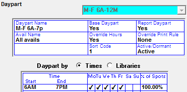
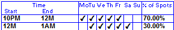
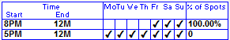
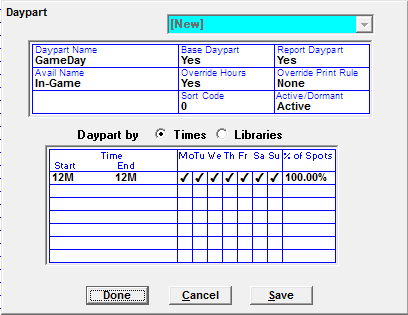
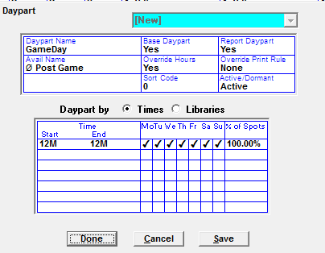
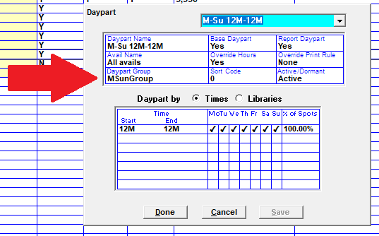
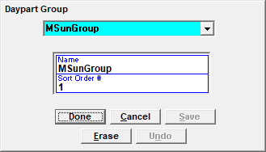

Dayparts
You can select an existing daypart from the Daypart field dropdown, or enter a new daypart by selecting New from the dropdown and pressing Tab.
The Daypart Screen is where you define the parameters of the daypart.

- Daypart Name: This name will be selectable in the Proposals/Orders screen, and will appear on the contract report and other reports.
- Base Daypart: Indicate whether the daypart is a Base Daypart in the Base Daypart field. Base Dayparts are used when creating a Budget and on the reports Sales Vs Plan and Average Prices Needed to make Plan.
- Report Daypart: Indicate whether the daypart should appear on reports in the Report Daypart field.
- Avail Name: The Avail Name field is used to specify whether spots booked into this daypart can be scheduled into all avails or booked into or excluded from a specific type of avail.
- Override Hours: When set to Yes, this setting allows users to override the daypart hours on the Proposals and Orders screen. When set to No, the user will be unable to alter the daypart hours on the Proposals and Orders screen.
- Override Print Rule: This determines what daypart information will appear on the proposals/contracts report when a daypart is overridden in order/proposal screen
- If set to None, the Override times/days will print on the contract/proposal
- If set to Daypart Name, the Override times/days will print on the contract/proposal with the Daypart name beneath them in parenthesis
- If set to Avail Name, the Override times/days will print on the contract/proposal with the Book Into Avail name beneath them in parenthesis
- If there is not an override on the proposal/contract, this question does not apply, and the daypart name will appear
- Daypart Group: Dayparts can be grouped together into daypart groups, which are defined in the daypart group field on the daypart screen. The Daypart Group view on the Proposal screen Demo Bar can be used to view audience data totals by daypart group. (This feature is available on version 7.1 and above only.)
- Sort Code: Assign a sort code to each vehicle/daypart in the Sort Code field, which determines the order in which the dayparts sort on reports. If left blank, they will sort alphabetically by vehicle
- Active/Dormant: The Active/Dormant status is used to specify whether the daypart is active and can be selected, or is dormant, and cannot be selected. You can make an Active daypart Dormant, and can reactivate a Dormant daypart at any time.
Defining Daypart Parameters
Once you have tabbed through all of the header questions, fill in the appropriate Start and End Times of the daypart, and check on its appropriate Days.
These time and date fields are what the system will use to properly schedule the spots ordered for a daypart, not what is defined in the daypart name.
Time Segment Break Outs
Specify what percentage of spots you wish to book into these times and days. If there is only one time period for the days selected that you wish the spots to book into, the percentage should be 100 percent. If multiple time periods are broken out, enter the percentage of spots to schedule into each timeframe.
Crossing Midnight
If you have a daypart that crosses Midnight, you must split the time period into two segments, one prior and one post-Midnight.
For example: if the daypart defined is 10p-1a, you must split the timeframe into two segments, and enter the percentage of spots to book into each segment.

Keep in mind that spots airing post 12M are part of the next day, i.e. the portion of spots airing between 12M-1A on Friday, are really airing on Saturday.
Alternative Scheduling
You can also designate a daypart to use Alternative Scheduling. When an order is scheduled the system will attempt to book all the spots into the first set of times and days. For any spots unable to schedule into that time period, the system will try to book into the second set of times and days.
To define Alternative Scheduling for a daypart, enter zero (0) percent in the percentage of spots column for each set of times and days defined. You can define up to seven different Alternative Schedule Dayparts.

In this example: the system will first attempt to book the spots between 8PM and 12 midnight, Friday, Saturday, and Sunday. If any spots are unable to book in this time/day period, the system will next try to book the spots between 5PM and 12 Midnight, Monday-Sunday.
Creating a ‘Book Into’ Daypart
If you want to control which type of avails into which a daypart can schedule, you can use the Book Into daypart feature. This feature allows you to sell a named avail, and those spots ordered with a Book Into daypart will only schedule into that named avail.
To create a Book Into daypart follow the steps to create a new daypart, detailed above. After entering the name of the new daypart, tab into the Avail Name field. Click on the “Avail Name” toggle until it says “Book Into”. Press tab, and a list of Avail Names previously defined in the Programming screen will appear. Select the avail that you wish this daypart to exclusively book into and then press Tab.

Creating an Exclude Daypart
Similar to the Book Into daypart, which will only place a spot in a designated avail, there may be times when you need a spot to book anywhere except within a certain avail type, for example, a spot can air anywhere in the sports broadcast except in the Post Game show. To handle these situations we have an Exclude daypart feature.
To set up an Exclude daypart, tab to the Avail Name field and click on the “Avail Name” toggle until it changes to “Exclude”. Press Tab and a list of avail names predefined in the Programming screen will appear. Select the Avail Name you do not want to book into, and continue to fill out the rest of the information.

Daypart Groups
Daypart Groups are a way of grouping dayparts together for viewing on the Daypart Group view on the Proposal Screen Demo Bar. Daypart Groups are defined on the Daypart screen, in the Daypart Group field, by selecting a previously created daypart group from the list. (Version 7.1 and above only.)

To create a new daypart group, select “New” from the daypart group field on the Daypart screen to bring up the Daypart Group sub-screen. Enter the daypart group name and sort number and then save it. (The sort order number is used to sort the daypart groups on the Demo Bar daypart group view.)

Existing daypart groups can also be edited on this screen. Note that each daypart group must have a unique name.
Once they’ve been created, daypart groups can be viewed on the Proposal screen Demo Bar “Daypart Groups” view.
Editing an Existing Daypart
You can edit an existing daypart, even if it is referenced by a contract, at any time. Depending on the type of edit, the contract may or may not be affected by the change.
Editing Rules
- Changes to Days will not affect the order. In other words, if you add or delete days from a daypart, any existing order will retain the daypart’s original day structure
- Example: If a MTWThF daypart was ordered, and was then changed in Rate Card to be MTWThFSS, the spots would only schedule on M-F avails
- Changes to a Daypart’s time will affect an order. In other words, if you change a daypart’s time structure, schedule lines referencing that daypart will now reference the new times
- Example: If a 6a-7p daypart is changed to be 6a-10a in Rate Card, spots will not be scheduled after 10a
- In both cases, the change must be made with the daypart itself, not just to its name
- If a daypart is edited, and a contract referencing that daypart is revised, existing schedule lines will follow the rules above, while new lines will always reference the edited daypart